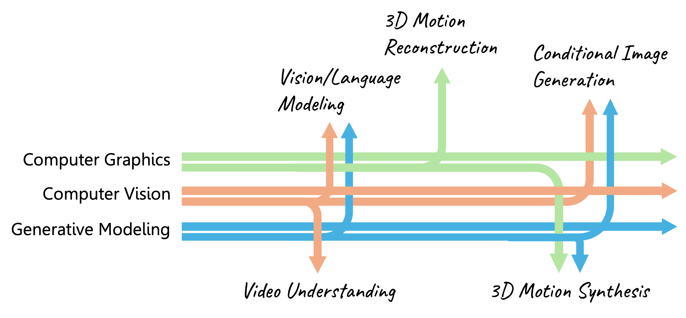
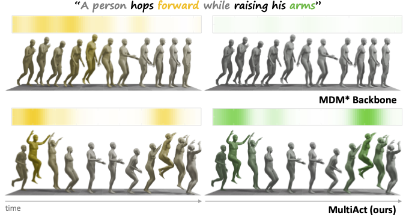
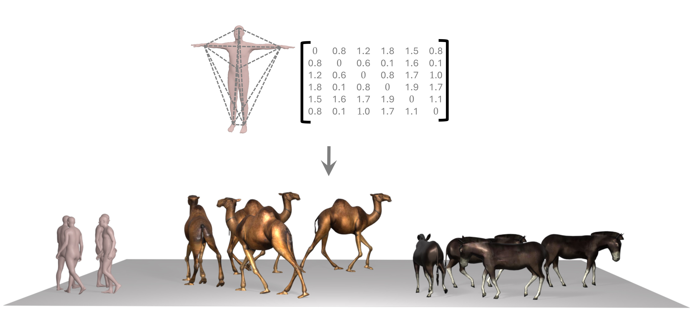
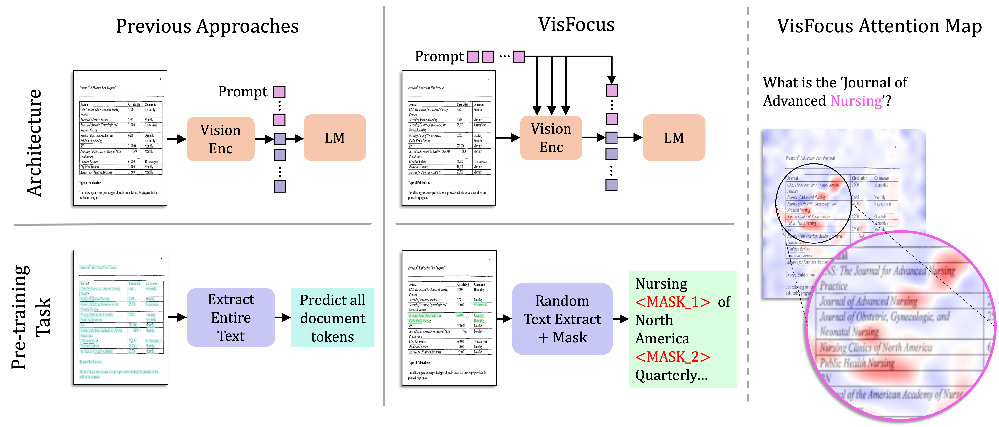
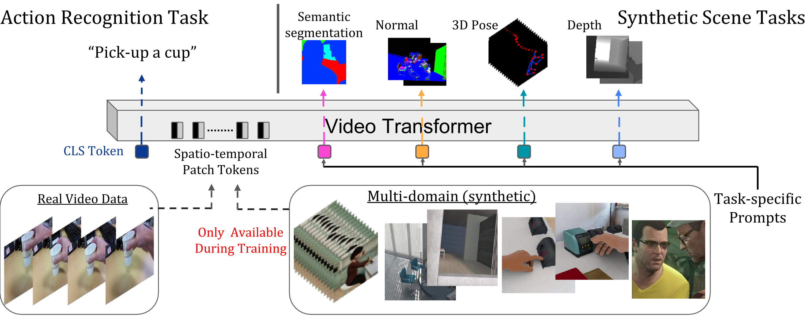

Ofir
Abramovich
I study how machines see, reason, and understand the visual world.
I am a PhD candidate at Reichman University, advised by Prof. Ariel Shamir.
My research lies at the intersection of computer graphics, computer vision, and 3D virtual worlds.
I’m passionate about AI’s evolving role in enhancing machine perception, creativity, and intelligence,
and I feel grateful to contribute to this rapidly advancing field.
Outside of research, I enjoy music, cooking, and playing tennis.
I’m always happy to connect and discuss new ideas, potential collaborations, or simply chat about research!

Apr 2026🎤 I will be presenting our work Mocap Anywhere at the upcoming Israeli Vision Day in TAU! (link)
Jan 2026🎉 Our paper on VisFocus has been accepted by ECCV!






Education
Experience
↓ Download Full CV (PDF)
I'm always happy to chat about research, collaborations, or ideas at the intersection of vision and generative AI.